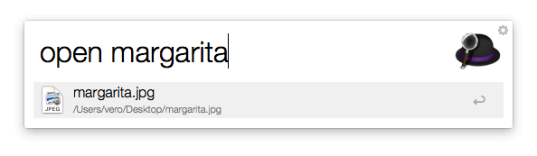
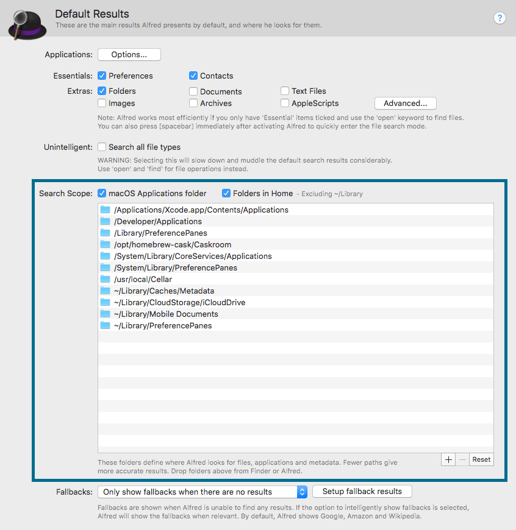
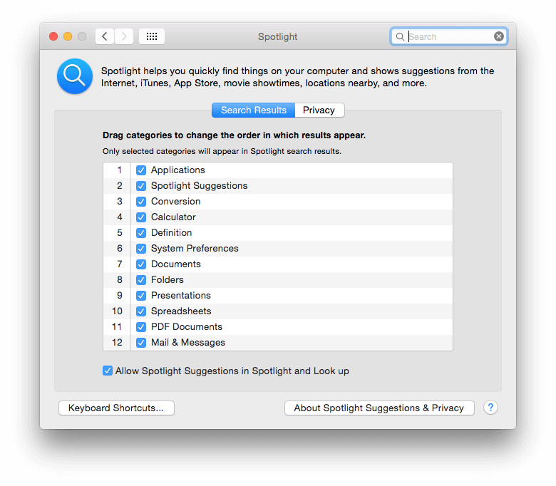
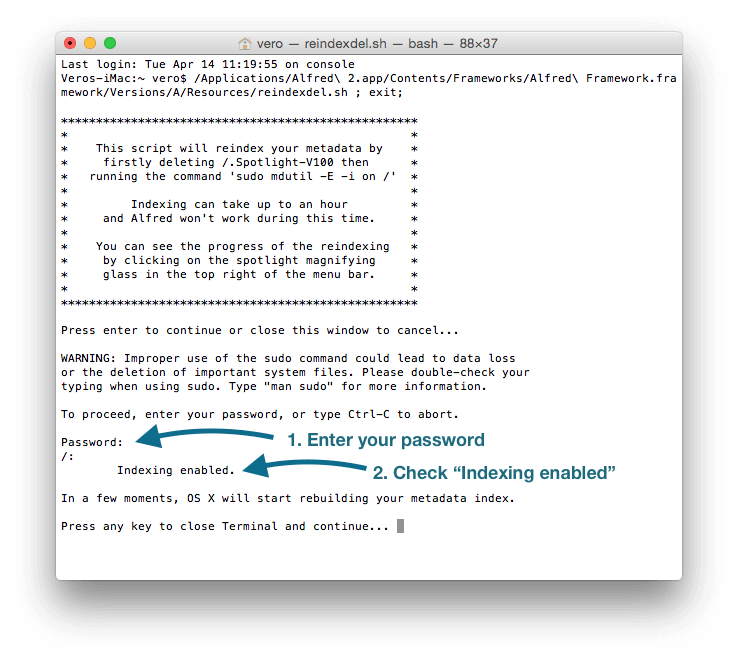

Troubleshooting File Indexing Issues
If Alfred can't find the files you're looking for, take a look at these steps to troubleshoot the issue.
Note: If you've upgraded to macOS 10.15 Catalina, please ensure that you're using Alfred 4.0.8+ and that Catalina is also up-to-date.
Take a look at our Catalina-specific troubleshooting page for pointers specific to this new version of macOS.
1. Use the "find", "open", and "in" keywords
Alfred uses an intelligent search scope to be fast and efficient. The results included in Alfred's default results include applications, contacts and other file types you've specified in your Default Results preferences.
You can expand your search by prefixing your search with these keywords:
- "open" (or a quick press of the spacebar as a shortcut) to launch the file/app you're searching for
- "find" to reveal it in Finder
- "in" to search inside files

2. Is your search scope set correctly?
Alfred searches for files within his defined search scope. To review your settings, go to Preferences > Features > Default Results.
Ensure the file you're searching for is located within your search scope. You can drag in additional folders if your files are stored outside of the existing scope.

To keep Alfred's results clean, we recommend use use the spacebar prefix (as in step 1) to search for files but if you're searching for types you want to include in default results (without a keyword or spacebar prefix), ensure these are checked in the Essentials or Extras.
If your search scope is correct, move on to the next step.
3. Are your Spotlight Search Results checked?
Launch your System Preferences to the Spotlight preference pane to ensure all checkboxes for the file types you want to search are selected. Spotlight allows you to choose which file types are indexed by macOS. As Alfred relies on the same metadata, it's essential that the boxes are checked for all file types you want Alfred to find.

Check the second tab, Privacy, and ensure that you haven't inadvertently dragged folders or files to this tab.
4. Have you rebuilt your Mac's index?
It's possible for the metadata gathered by macOS to become corrupted or be missing some files, which means Alfred won't return the results you expect. This can sometimes be obvious because Spotlight won't show any results either, but in some cases, Spotlight may still be showing old cached data.
Rebuilding the index will cause macOS to reindex all files, refreshing the results it provides you.
How to rebuild your Mac's index:
- Go to the Advanced tab in Alfred's Preferences and click "Rebuild macOS Metadata".
- You'll need to type your password; The characters won't appear as you type, so just keep typing and press Return.
- You should also check the "Delete .Spotlight-V100 before reindex" box, ensuring the reindex is as thorough as possible.
Indexing can take up to an hour on older Macs, during which time Spotlight and Alfred's search results may be incomplete, so time for a cup of tea?

Indexing Enabled
You should see the message "Indexing enabled" after typing your password. If you see the message "Spotlight server is disabled" or a similar message, you'll need to re-enable indexing on your Mac. Contact us from your Powerpack email address if you're not sure how to re-enable it.
Once macOS has finished reindexing, type "reload" into Alfred to refresh his cache of your Applications.
If you notice that Alfred appears to find an application that Spotlight doesn't see, this can be because Alfred has previously cached the application. Typing "reload" into Alfred will refresh the cache so the app will disappear. You'll then need to perform the indexing step above.
5. Is your application cache up to date?
If you are looking for an Application, it's possible that your application cache has somehow become outdated. Type the word "reload" in your Alfred window to refresh your app cache.
You're still here? Check the next step.
6. Are you searching for the correct file name?
Ensure that the name of the file you're searching for is accurate, as you may be searching for a file name that doesn't exist. Consider using the * (star) character as a wildcard if you only know part of the word you're searching.
Still having issues?
If you're still unable to find files on your Mac, get in touch and give as much detail as you can on your situation and the steps you've taken.
For example:
- What file are you searching for, where is it located on your Mac and what file type is it?
- Can Spotlight find the file, or can neither Spotlight or Alfred find it?
- Are you struggling to find a single file or many?
- Please include the Diagnostics file in your email, which you can find in Alfred's Help preferences tab
The more information you provide, and the more thoroughly you answer questions, the easier it'll be to resolve your issue! :)